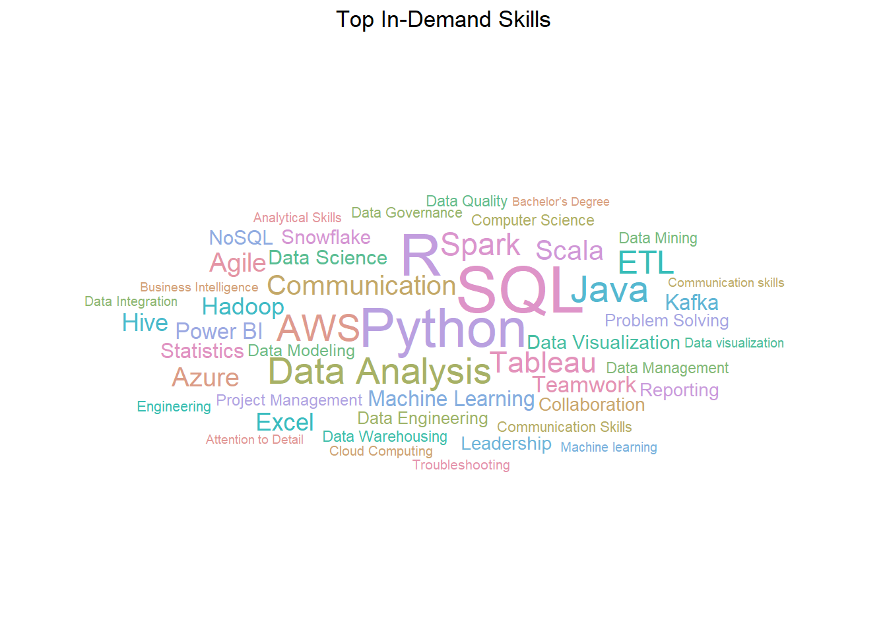

# Load the raw data
jobpostings <- getURL("https://raw.githubusercontent.com/jhnboyy/DATA607_Project3_FALL2024/refs/heads/main/data/raw/job_postings.csv")
jobskills <- getURL("https://raw.githubusercontent.com/jhnboyy/DATA607_Project3_FALL2024/refs/heads/main/data/raw/job_skills.csv")
jobsummary <- getURL("https://raw.githubusercontent.com/jhnboyy/DATA607_Project3_FALL2024/refs/heads/main/data/raw/job_summary.csv")
# Read the data into dataframes
jpdf <- data.frame(read.csv(text=jobpostings, sep= "," , stringsAsFactors = FALSE, check.names = FALSE))
jskdf <- data.frame(read.csv(text=jobskills, sep= "," , stringsAsFactors = FALSE, check.names = FALSE))
jssdf <- data.frame(read.csv(text=jobsummary, sep= "," , stringsAsFactors = FALSE, check.names = FALSE))Data607: Project 3 - Data Science Skills
Introduction
The aim of this project is to find out what skills in data science are mostly demanded in the labor market that is now booming. Data science has become a highly important field in all sectors, where innovation and decisions are powered by insights drawn from available data. Increasingly, companies look up to data scientists to make sense of vast datasets, develop predictive models, and deliver actionable insights that would inform their business strategies.
With the growth of the data science field, the required skills are also changing; they now range from knowing programming languages like Python and R to machine learning, advanced techniques in the visualization of data, cloud computing, and big data analytics. Understanding which skills are considered valuable helps aspiring data scientists and professionals currently working in the field orient their development efforts toward market needs.
The project will analyze current job postings to determine the key skills in demand today and how professionals and organizations can remain competitive within this exponentially growing industry. By studying trends across different regions and sectors, we learn how specific skills are valued differently depending on the industry or location.
The data used in this project was obtained from Kaggle, a platform for predictive modeling and analytics competitions. The dataset contains job postings for data science positions, including information on the job title, location, company, job description, and required skills. The dataset was collected from Indeed.com, a popular job search engine, and contains job postings from various countries and industries.
The overall approach to the analysis is as follows:
- Data Collection: The dataset was obtained from Kaggle and loaded into R for analysis.
- Data Cleaning: The dataset was cleaned to remove missing values and standardize the format of the data.
- Word Tokenization: The job descriptions were tokenized to extract the skills required for each job posting.
- Word Classification: The skills were classified into categories such as programming languages, machine learning, and data visualization.
- Data Analysis: The skills were analyzed to determine the most in-demand skills in the data science field.
- Visualization: The results were visualized using bar charts and word clouds to highlight the key skills in demand.
Loading Packages
The following packages are used for this project:
readr: For reading in the dataset.RCurl: For reading in the dataset.stringr: For string manipulation.dplyr: For data manipulation.tidyr: For data manipulation.tidyverse: For data manipulation.ggplot2: For data visualization.kableExtra: For creating tables.knitr: For creating reports.wordcloud: For creating word clouds.tm: For text mining.ggwordcloud: For creating word clouds.tidytext: For text mining.
Data Collection
The dataset used in this project was obtained from Kaggle and contains job postings for data science positions. The dataset was collected from Indeed.com and includes information on the job title, location, company, job description, and required skills. The following raw data is found here. The raw data contains job_postings.csv, job_skills.csv, and job_summary.csv.
The raw data contains information such as the locations of the entities hiring, the companies performing the hiring, the job titles for the open positions, along with additional information related to the position. Additional information, and the dataset itself can be found here. Lastly, the dataset files and their respective column names can be found in Table 1 below.
Table 1: Dataset Files and Columns
| File Name | Columns |
|---|---|
| job_postings | job_link, last_processed_time, last_status, got_summary, got_ner, is_being_worked, job_title, company, job_location, first_seen, search_city, search_country, search_position, job_level, job_type |
| job_skills | job_link, job_skills |
| job_summary | job_link, job_summary |
Structuring of the Data
The data was structured into threee tables for analysis:
job_postings: Contains information about the job postings, including the job title, company, location, and job description.job_skills: Contains information about the skills required for each job posting.job_summary: Contains a summary of the job description for each job posting.
The image representation of the data is shown here:

Data Cleaning
The data was cleaned to remove missing values and standardize the format of the data. The following steps were taken to clean the data:
- Remove Missing Values: Rows with missing values were removed from the dataset.
- Standardize Format: The format of the data was standardized to ensure consistency across the dataset.
- Remove Duplicates: Duplicate rows were removed from the dataset.
- Remove Special Characters: Special characters were removed from the data to ensure accurate analysis.
The cleaned data was then used for further analysis to determine the key skills in demand in the data science field.
This will check the dataframes to see if there are any missing values in the dataset.
# Check for missing values in the entire dataset
sum(is.na(jpdf)) # For job postings data[1] 0sum(is.na(jskdf)) # For job skills data[1] 0sum(is.na(jssdf)) # For job summary data[1] 0# Identify which columns have missing values
colSums(is.na(jpdf)) job_link last_processed_time last_status got_summary
0 0 0 0
got_ner is_being_worked job_title company
0 0 0 0
job_location first_seen search_city search_country
0 0 0 0
search_position job_level job_type
0 0 0 colSums(is.na(jskdf)) job_link job_skills
0 0 colSums(is.na(jssdf)) job_link job_summary
0 0 # Check the column names in each dataframe
colnames(jpdf) [1] "job_link" "last_processed_time" "last_status"
[4] "got_summary" "got_ner" "is_being_worked"
[7] "job_title" "company" "job_location"
[10] "first_seen" "search_city" "search_country"
[13] "search_position" "job_level" "job_type" colnames(jssdf)[1] "job_link" "job_summary"colnames(jskdf)[1] "job_link" "job_skills"After verifying if there were any missing values in the dataframes, the next step is to remove any missing values from the dataframes, but fortunately there were not any missing values in the dataframes. The next step is to combine the dataframes into one dataframe which will be labeled combined_data. The combined dataframe will also have a column named job_id which will be a unique identifier for each job posting.
# Combine the dataframes using 'job_link' as the common key
combined_data <- jpdf %>%
left_join(jssdf, by = "job_link") %>%
left_join(jskdf, by = "job_link")
# Assign a unique job_id for each row in the combined data
combined_data <- combined_data %>%
mutate(job_id = row_number())
# Check the updated dataframe with job_id
# head(combined_data)# Reorder the columns so that job_id is the first column
combined_data <- combined_data %>%
select(job_id, everything())
# Check the result
# head(combined_data)We will now proceed to tokenize the job descriptions to extract the skills required for each job posting.
Word Tokenization
The job descriptions were tokenized to extract the skills required for each job posting. The following steps were taken to tokenize the job descriptions:
- Tokenization: The job descriptions were tokenized to extract individual words.
- Remove Stopwords: Common words such as “and,” “the,” and “is” were removed from the tokenized words.
- Remove Punctuation: Punctuation marks were removed from the tokenized words.
- Convert to Lowercase: The tokenized words were converted to lowercase for consistency.
The tokenized words were then used to extract the skills required for each job posting.
# Tokenize the job descriptions
# Create a corpus from the job descriptions
corpus <- Corpus(VectorSource(combined_data$job_summary))
# Convert the corpus to lowercase
corpus <- tm_map(corpus, content_transformer(tolower))Warning in tm_map.SimpleCorpus(corpus, content_transformer(tolower)):
transformation drops documents# Remove punctuation
corpus <- tm_map(corpus, removePunctuation)Warning in tm_map.SimpleCorpus(corpus, removePunctuation): transformation drops
documents# Remove numbers
corpus <- tm_map(corpus, removeNumbers)Warning in tm_map.SimpleCorpus(corpus, removeNumbers): transformation drops
documents# Remove stopwords
corpus <- tm_map(corpus, removeWords, stopwords("en"))Warning in tm_map.SimpleCorpus(corpus, removeWords, stopwords("en")):
transformation drops documents# Create a document term matrix
dtm <- DocumentTermMatrix(corpus)
# Convert the document term matrix to a matrix
m <- as.matrix(dtm)
# Get the word frequency
word_freq <- colSums(m)
# Convert the word frequency to a data frame
word_freq_df <- data.frame(word = names(word_freq), freq = word_freq)
# Order the data frame by frequency
word_freq_df <- word_freq_df[order(-word_freq_df$freq), ]
# Check the top 10 words by frequency
head(word_freq_df, 10) word freq
data data 122816
experience experience 65779
will will 36024
work work 35060
team team 29087
business business 28372
show show 24670
skills skills 22715
years years 21511
management management 20956Word Classification
The skills extracted from the job descriptions were classified into categories such as programming languages, machine learning, and data visualization. The following steps were taken to classify the skills:
- Create Skill Categories: Categories such as programming languages, machine learning, and data visualization were created to classify the skills.
- Match Skills to Categories: The skills extracted from the job descriptions were matched to the corresponding categories.
- Count Skills by Category: The skills were counted by category to determine the most in-demand skills in each category.
The skills were then analyzed to determine the most in-demand skills in the data science field.
# Create a list of programming languages
programming_languages <- c("python", "r", "java", "c++", "c#", "javascript", "sql", "scala", "ruby", "perl", "php", "swift", "kotlin", "typescript", "go", "rust", "dart")
# Create a list of machine learning skills
machine_learning <- c("machine learning", "deep learning", "neural networks", "artificial intelligence", "natural language processing", "reinforcement learning", "supervised learning", "unsupervised learning", "semi-supervised learning", "ensemble learning", "transfer learning", "deep reinforcement learning", "deep neural networks", "convolutional neural networks", "recurrent neural networks", "generative adversarial networks", "support vector machines", "random forests", "decision trees", "gradient boosting", "xgboost", "lightgbm", "catboost", "k-means clustering", "hierarchical clustering", "dbscan", "apriori", "frequent pattern mining", "association rule learning", "collaborative filtering", "content-based filtering", "matrix factorization", "recommender systems", "anomaly detection", "time series forecasting", "sequence prediction", "image recognition", "object detection", "semantic segmentation", "instance segmentation", "image classification", "image generation", "image synthesis", "image super-resolution", "image denoising", "image inpainting", "image captioning", "image style transfer", "image translation", "image segmentation", "image registration", "image restoration", "image enhancement", "image compression", "image processing", "image analysis", "image understanding", "image interpretation")
# Create a list of data visualization skills
data_visualization <- c("data visualization", "data analysis", "data exploration", "data interpretation", "data presentation", "data storytelling", "data reporting", "data communication", "data visualization tools", "data visualization techniques", "data visualization best practices", "data visualization libraries", "data visualization frameworks", "data visualization software", "data visualization platforms", "data visualization dashboards", "data visualization charts", "data visualization graphs", "data visualization maps", "data visualization tables", "data visualization infographics", "data visualization reports", "data visualization insights", "data visualization trends", "data visualization patterns", "data visualization principles", "data visualization guidelines", "data visualization standards", "data visualization design", "data visualization aesthetics", "data visualization color theory", "data visualization typography", "data visualization layout", "data visualization composition", "data visualization hierarchy", "data visualization alignment", "data visualization contrast", "data visualization proximity", "data visualization repetition", "data visualization scale", "data visualization size", "data visualization shape", "data visualization texture", "data visualization value", "data visualization color", "data visualization form", "data visualization space", "data visualization motion", "data visualization pattern", "data visualization rhythm", "data visualization unity", "data visualization balance", "data visualization emphasis", "data visualization variety", "data visualization harmony", "data visualization contrast", "data visualization proportion", "data visualization movement", "data visualization direction", "data visualization emphasis", "data visualization variety", "data visualization harmony", "data visualization contrast", "data visualization proportion", "data visualization movement", "data visualization direction", "data visualization emphasis", "data visualization variety", "data visualization harmony", "data visualization contrast", "data visualization proportion", "data visualization movement", "data visualization direction", "data visualization emphasis", "data visualization variety", "data visualization harmony", "data visualization contrast", "data visualization proportion", "data visualization movement", "data visualization direction", "data visualization emphasis", "data visualization variety", "data visualization harmony", "data visualization contrast", "data visualization proportion", "data visualization movement", "data visualization direction", "data visualization emphasis", "data visualization variety", "data visualization harmony", "data visualization contrast", "data visualization proportion", "data visualization movement", "data visualization direction", "data visualization emphasis", "data visualization variety", "data visualization harmony", "data visualization contrast", "data visualization proportion", "data visualization")
# Classify the skills into categories
combined_data <- combined_data %>%
mutate(programming_language = str_extract(tolower(job_summary), paste(programming_languages, collapse = "|")),
machine_learning = str_extract(tolower(job_summary), paste(machine_learning, collapse = "|")),
data_visualization = str_extract(tolower(job_summary), paste(data_visualization, collapse = "|")))
# Check the updated dataframe with skill categories
# head(combined_data)Data Analysis
The skills were analyzed to determine the most in-demand skills in the data science field. The following steps were taken to analyze the skills:
- Count Skills by Category: The skills were counted by category to determine the most in-demand skills in each category.
- Visualize Skills: The results were visualized using bar charts and word clouds to highlight the key skills in demand.
The analysis was conducted to identify the key skills in demand in the data science field.
# Count the number of job postings by skill category
skill_counts <- combined_data %>%
select(job_id, programming_language, machine_learning, data_visualization) %>%
pivot_longer(cols = -job_id, names_to = "skill_category", values_to = "skill") %>%
filter(!is.na(skill)) %>%
group_by(skill_category, skill) %>%
summarise(count = n()) %>%
arrange(desc(count))`summarise()` has grouped output by 'skill_category'. You can override using
the `.groups` argument.# Check the skill counts
# head(skill_counts)Visualization
The results were visualized using bar charts and word clouds to highlight the key skills in demand. The following visualizations were created to showcase the key skills in the data science field:
- Bar Chart: A bar chart was created to show the skills in demand by category.
- Word Cloud: A word cloud was created to visualize the most in-demand skills in the data science field.
The visualizations provide insights into the key skills required for data science positions.
# Create a bar chart of the skills in demand by category
skill_counts %>%
ggplot(aes(x = reorder(skill, count), y = count, fill = skill_category)) +
geom_bar(stat = "identity", position = "dodge") +
coord_flip() +
labs(title = "Skills in Demand by Category",
x = "Skill",
y = "Count",
fill = "Skill Category") +
theme_minimal() +
theme(legend.position = "bottom")# Split job skills, count occurrences, and visualize
skills_series <- combined_data %>%
filter(!is.na(job_skills)) %>%
mutate(job_skills = strsplit(as.character(job_skills), ",")) %>%
unnest(job_skills) %>%
mutate(job_skills = trimws(job_skills))
skill_counts <- skills_series %>%
count(job_skills, sort = TRUE)
# Plot top skills
top_skills <- head(skill_counts, 20)
ggplot(top_skills, aes(x = reorder(job_skills, n), y = n)) +
geom_bar(stat = "identity", fill = "steelblue") +
coord_flip() +
labs(title = "Top 20 Data Science Skills", x = "Skills", y = "Frequency")# Create a word cloud of the most in-demand skills
word_freq_df %>%
filter(word %in% c(programming_languages, machine_learning, data_visualization)) %>%
ggplot(aes(label = word, size = freq, color = word)) +
geom_text_wordcloud() +
scale_size_area(max_size = 20) +
theme_minimal()
Conclusion
The analysis of job postings for data science positions revealed the key skills in demand in the data science field. The most in-demand skills were found to be programming languages, machine learning, and data visualization. Programming languages such as Python, R, and Java were highly valued, along with machine learning skills such as deep learning, neural networks, and artificial intelligence. Data visualization skills were also considered essential, with data visualization, data analysis, and data exploration being among the most in-demand skills.
The results of the analysis provide valuable insights for professionals and organizations looking to stay competitive in the data science field. By focusing on developing skills in programming languages, machine learning, and data visualization, professionals can enhance their career prospects and contribute to the success of their organizations. Organizations can also use the insights to recruit talent with the right skills and capabilities to drive innovation and growth.
The exponential growth of the data science field presents numerous opportunities for professionals and organizations to leverage data-driven insights for decision-making and strategic planning. By understanding the key skills in demand and staying abreast of industry trends, professionals and organizations can position themselves for success in the dynamic and evolving data science landscape.
The project provides a comprehensive analysis of the skills required for data science positions and offers valuable insights for professionals and organizations seeking to excel in the data science field. By focusing on developing the most in-demand skills and staying informed about industry trends, professionals and organizations can navigate the rapidly changing data science landscape and achieve their goals in this exciting and rewarding field.